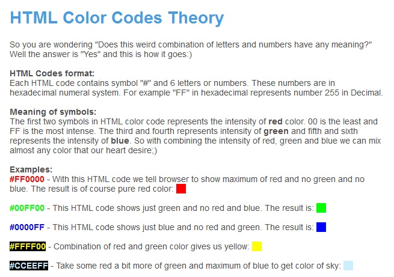

Due date: September 08, 2017, at 3:00 pm (Montreal time)
Always keep at least one backup copy of your work! Your work will consist of three web pages (files).
Question 1: Have one main page, called index.html, with your identification, and links to the two other web pages that you will produce in this assignment.
Put your name and e-mail address in italics on your main page, somewhere lower, on the right side. Here is an example of how this page may look.
Question 2: dinner.html. Here is a screenshot of a web page you must reproduce exactly. The web page must be in a separate file.
Question 3: Use an Internet search engine (e.g. www.google.com) to research only one of the following topics, given below. Follow up on one or two references, then on a separate web page, write a short summary (three - four paragraphs) neatly laid out. In each case, give the URL of the site where you found your inspiration. Make the site(s) active links.
Summarize in your own words - do not lift text directly from the online reference, except possibly for one brief, direct quote.
Remember to give each of your pages a title (use the title tag) and a title heading in the body of your document. Use the <br>, <p>, and <hr> tags carefully.
Choose ONLY ONE of the topics below for question 3:
Here is a sample to give you an idea for your presentation.
Do not reproduce the model too closely. Red backgrounds are hard on the eye. Also avoid dark background colours as much as possible, they are hard to read even if the font is in a contrasting colour.
In designing each web page: start from the top of the page, and check with the browser the parts that you complete, as you go down the page. Save often! For fonts, find close approximations, if the exact font is not available.
For choosing colours and finding their hexadecimal representations, refer to web sites from where you can freely download a colour-picking application, or one with a colour palette. You may find this link particularly useful:
http://html-color-codes.info/
Below you'll find a quick guide on using hexadecimal colour codes:

### The assignment is to be submitted electronically. Details will be given in the lab. ###
Last update: September 01, 2017